측량및지형공간정보산업기사 (2014-09-20 기출문제)
1과목: 응용측량
1. 경사 30° 인 경사터널에서 터널입구와 터널 내부의 두 점간 고저차를 측정하는데 가장 신속하고 정확한 방법은?
- 경사계에 의해서 경사를 구하고 사거리를 측정하여 계산으로 구한다.
- 수은 기압계에 의하여 측정한다.
- 레벨로 직접 수준측량을 한다.
- 토털스테이션을 사용하여 측정한다.
(정답률: 64%)

2. 다음 중 노선측량의 종단도면 내에 삽입되는 내용이 아닌 것은?
- 측점간의 수평거리
- 지반고와 계획고와의 차
- 점토량 및 성토량
- 계획선의 경사
(정답률: 72%)
3. 각과 위치에 의한 경관도의 정량화에서 시설물의 한 점을 시준 할 때 시준선과 시설물 축선이 이루는 각 α는 크기에 따라 입체감에 번화를 주는데 다음 중 입체감 있게 계획이 잘된 경관을 얻을 수 있는 범위로 가장 적합한 것은?
- 10° ＜ α ≤ 30°
- 30° ＜ α ≤ 50°
- 40° ＜ α ≤ 60°
- 50° ＜ α ≤ 70°
(정답률: 88%)
4. 지하에 매설되어 있는 금속관로 또는 비금속관로의 탐지기의 평면 위치에 대한 정밀도 성능기준(허용탐사오차)은?
- ±10mm
- ±20cm
- ±50cm
- ±1m
(정답률: 70%)
5. 저수용량의 산정에 주로 쓰이는 용적산정 방법은?
- 점고법
- 등고선법
- 단면법
- 절선법
(정답률: 73%)
6. 반지름 150m의 단곡선을 설치하기 위하여 교각을 관측하였더니 90° 이였다. 곡선의 시점의 추가거리는? (단, 교점의 추가거리는 1200.50m 이다.)
- 950.50m
- 1⑤0.50m
- 1100.50m
- 1250.50m
(정답률: 79%)
7. 하천의 유속측량에서 평균유속을 구하는 방법 중 1점법의 관측 지점으로 옳은 것은? (단, 수면으로부터의 깊이를 기준으로 한다.)
- 수심의 40％ 지점
- 수심의 50％ 지점
- 수심의 60％ 지점
- 수심의 80％ 지점
(정답률: 79%)
8. 그림과 같이 2차포물선에 의하여 종단곡선을 설치하려 한다면 C점의 계획고는? (단, A점의 계획고는 50.00m 이다.)
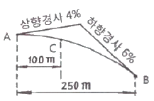
- 40.00m
- 50.00m
- 51.00m
- 52.00m
(정답률: 60%)
9. 그림과 같이 ABCD토지의 면적을 심프슨 제2법칙에 의하여 구한 결과 45m2이였다. AD의 거리는?
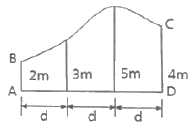
- 3.0m
- 9.0m
- 12.0m
- 16.0m
(정답률: 70%)
10. 그림과 같은 사다리꼴 토지를 AB와 나란한 선 XY로 면적을 m : n = 3 : 2로 분할하고자 한다. AB=40m, AD=60m, CD=50m 일 때에 AX는?
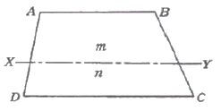
- 46.26m
- 24.00m
- 36.00m
- 37.56m
(정답률: 28%)
11. 자동차가 곡선부를 주행할 경우에 뒷바퀴는 앞바퀴보다도 항상 안쪽으로 지난다. 그러므로 곡선부에서는 그 내측부분을 직선부에 비하여 넓게 할 필요가 있는데, 이때 곡선부의 확폭량(ε)을 나타내는 식은? (단, D : 차폭(레일간격), V : 설계속도, R : 곡선반지름, L : 차량 뒤축에서부터 차량의 앞면까지 거리)
- ε = DV2 / R
- ε = V2 / DR
- ε = L2 / R
- ε = L2 / 2R
(정답률: 89%)
12. 터널 내에서 차량 등에 의하여 파손되지 않도록 콘크리트 등을 이용하여 만든 기준점을 무엇이라 하는가?
- 도벨(dowel)
- 레벨(level)
- 자이로(gyro)
- 도갱(pilot tunnel)
(정답률: 82%)
13. ( )에 알맞은 내용으로 짝지어진 것은?
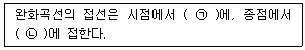
- ㉠ 곡선, ㉡ 원호
- ㉠ 직선, ㉡ 원호
- ㉠ 곡선, ㉡ 직선
- ㉠ 직선, ㉡ 곡선
(정답률: 75%)
14. 축척 1 : 1200 지도상의 면적을 측정할 때, 이 축척을 1 : 600으로 잘못 알고 측정하였더니 10,000m2가 나왔다면 실제면적은?
- 40,000m2
- 20,000m2
- 10,000m2
- 2,500m2
(정답률: 65%)
15. 단곡선에 있어서 반지름 R=150m 이고, 교각 I=60° 일 때 중앙종거(M)와 곡선장(C.L)으로 옳은 것은?
- M=75.00m, C.L=158.53m
- M=86.60m, C.L=173.21m
- M=18.09m, C.L=155.08m
- M=20.10m, C.L=157.08m
(정답률: 83%)
16. 해양에서 수심측량을 할 경우 음파 반사가 양호한 판 또는 바(Bar)를 눈금이 달린 줄의 끝에 매달아서 음향측심기의 기록지상에 이 반사체의 반향신호를 기록하여 보정하는 것은?
- 정사보정
- 방사보정
- 시간보정
- 음속도보정
(정답률: 90%)
17. 그림과 같은 터널에서 AB 사이의 경사가 1/250 이고 BC사이의 경사는 1/100 일 때 측점 A와 C사이의 지반고 차이는?
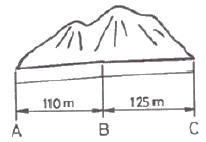
- 1.690m
- 1.645m
- 1.600m
- 1.590m
(정답률: 70%)
18. 하천측량에서 평면측량의 일반적인 범위는?
- 유제부에서 제외지 및 제내지 300m 이내, 무제부에서는 홍수영향 구역보다 약간 넓게
- 유제부에서 제외지 및 제내지 200m 이내, 무제부에서는 홍수영향 구역보다 약간 좁게
- 유제부에서 제내지 및 제외지 200m 이내, 무제부에서는 홍수영향 구역보다 약간 넓게
- 유제부에서 제내지 및 제외지 300m 이내, 무제부에서는 홍수영향 구역보다 약간 좁게
(정답률: 84%)
19. 하천측량을 통해 유속(V)과 유적(A)를 관측하여 유량(Q)을 계산하는 공식은?
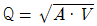
- Q = A · V
- Q = A2 · V
- Q = A2 / V
(정답률: 86%)
20. 10m 간격의 등고선으로 표시되어 있는 지형을 구적기로 면적을 구하여 A0=120m2, A1=650m2, A2=1,430m2, A3=4,620m2 A4=9,120m2 를 얻었다면 전체 토량은?
- 110,600m3
- 120,600m3
- 220,600m3
- 222,600m3
(정답률: 80%)
2과목: 사진측량 및 원격탐사
21. 다음 전자파 중 에너지 크기가 가장 큰 것은?
- 자외선
- 적외선
- 가시광선
- 마이크로파
(정답률: 65%)
22. 1 : 10,000 축척의 항공사진에서 1cm2로 나타난 운동장이 있다. 이 사진의 축척을 2.5배 확대 했을 경우 확대 사진에서 운동장의 크기는?
- 6.25cm2
- 4.00cm2
- 2.50cm2
- 0.40cm2
(정답률: 50%)
23. 일반 항공사진 촬영시 지표면에 기복이 있을 경우 기복에 따른 변위가 발생하지만, 비고나 경사각에 관계없이 유일하게 기복변위가 발생하지 않는 점은?
- 주점
- 연직점
- 등각점
- 자침점
(정답률: 65%)
24. 수치영상의 재배열(Resampling) 방법 중 하나로 가장 계산이 단순하고 고유의 픽셀 값을 손상시키지 않으나 영상이 다소 거칠게 표현되는 방법은?
- 3차회선 내삽법(Cubic Convolution)
- 공일차 내삽법(Bilinear Interpolation)
- 공3차회선 내삽법(Bicubic Convolution)
- 최근린내삽법(Nearest Neighbour Interpolation)
(정답률: 80%)
25. 항공측량 수행 시 지상기준점 측량작업을 줄이기 위해 비행기에 탑재하는 장비는?
- 토털스테이션
- GPS 수신기
- 다중분광센서
- 레이다 센서
(정답률: 63%)
26. 항공사진측량에서 AB 두 지점의 시차차 3.25mm, 촬영고도 3500m, 주점기선 100mm의 상태라면 AB 두 지점의 비고차는?
- 107.7m
- 113.8m
- 325m
- 350m
(정답률: 70%)
27. 사진측량에서 말하는 모형(Model)의 의미로 옳은 것은?
- 촬영지역을 대표하는 부분
- 촬영사진 중 수정 모자이크된 부분
- 한 쌍의 중복된 사진으로 입체시 되는 부분
- 촬영된 각각의 사진 한 장이 포괄하는 부분
(정답률: 75%)
28. SAR(Synthetic Apertuer Radar)의 왜곡 중에서 레이더 방향으로 기울어진 면이 영상에 짧게 나타나게 되는 왜곡 현상은?
- 음영(shadow)
- 전도(layover)
- 단축(foreshortening)
- 스페클잡음(speckle noise)
(정답률: 73%)
29. 공간정보를 수집하기 위한 위성 센서 내의 감지기가 일렬로 배열되어 있어 위성플랫폼의 진행방향으로 밀어내듯이 지상을 스캐닝하는 방식을 무엇이라 하는가?
- Whiskbroom Scanner
- Push broom Scanner
- Step Stair Scanner
- Synthetic Aperture Scanner
(정답률: 86%)
30. 사진측량 중 건축물, 교량 등의 변위를 관측하고 문화재 및 건물의 정면도, 입면도 제작에 이용되는 사진측량은?
- 항공사진측량
- 수치지형모형
- 지상사진측량
- 원격탐측
(정답률: 52%)
31. 위성영상 센서의 방사해상도에서 8bit로 표현할 수 있는 범위를 설명한 것으로 옳은 것은?
- 0~255
- 0~256
- 1~255
- 1~256
(정답률: 80%)
32. 위성영상을 이용한 정규식생지수(NDVI)를 산출하는 공식으로 옳은 것은?
- 근적외밴드 – 적밴드 / 근적외밴드 + 적밴드
- 근적외밴드 + 적밴드 / 근적외밴드 - 적밴드
- 근적외밴드 + 열적외밴드 / 근적외밴드 -열적외밴드
- 근적외밴드 – 열적외밴드 / 근적외밴드 + 열적외밴드
(정답률: 49%)
33. 다음 한 지역의 영상에서 “산림”에 대한 트레이닝을 한 결과 산출된 통계자료이다. 이 통계값과 사변형 분류법(parallelepiped classification)을 이용하여 아래 지역의 영상을 분류한 결과로 옳은 것은? (단, 통계: 최소값: 3, 최대값: 6)
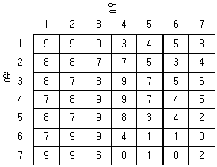
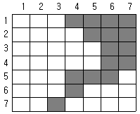
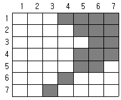
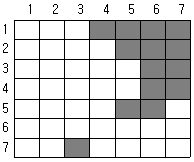
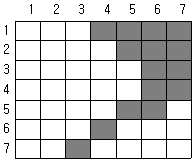
(정답률: 65%)
34. 다음 중 사진의 축척을 결정하는데 고려할 요소로 가장 거리가 먼 것은?
- 사용목적, 사진기의 성능
- 사용되는 사진기, 소요 정밀도
- 도화 축척, 등고선 간격
- 지방적 특색, 기상관계
(정답률: 89%)
35. 세부도화시 한 모델을 이루는 좌우사진에서 나오는 광속이 촬영면상에 이루는 종시차를 소거하여 목표지형지물의 상대위치를 맞추는 작업을 무엇이라 하는가?
- 내부표정
- 상호표정
- 절대표정
- 도화
(정답률: 67%)
36. 절대표정(absolute orientation) 작업에 대한 설명으로 옳지 않은 것은?
- 축척을 결정한다.
- 위치를 결정한다.
- 초점거리 조정과 주점의 표정작업이다.
- 표고와 경사의 결정작업이다.
(정답률: 74%)
37. 측량용 사진기의 검정자료(calibration data)에 포함되지 않는 것은?
- 주점의 위치
- 초점거리
- 렌즈왜곡량
- 좌표 변환식
(정답률: 63%)
38. 다음의 수치표고모델(DEM) 중 데이터의 구조가 가장 간단한 것은?
- 불규칙 삼각망(TIN)
- 격자형(grid)
- 점진형(progressive)
- 복합형(hybrid)
(정답률: 72%)
39. 지상고도 3000m의 비행기에서 초점거리 150mm의 사진기로 촬영한 수직항공사진에서 길이 50m인 교량의 길이는?
- 2.5mm
- 3.5mm
- 4.5mm
- 5.5mm
(정답률: 62%)
40. 지상기준점과 사진좌표를 이용하여 외부표정요소를 계산하기 위해 필요한 식은?
- 공선조건식
- Similarity 변환식
- Affine 변환식
- 투영변환식
(정답률: 72%)
3과목: GIS 및 GPS
41. GIS 데이터베이스에 관한 설명으로 옳지 않은 것은?
- 파일이 모여 필드를 구성한다.
- 레코드가 모여 파일을 구성한다.
- 파일베이스 방식에서 데이터베이스 방식으로 발전하였다.
- GIS에서는 일반적으로 동일 길이 레코드 방식보다는 기변길이 레코드 방식을 선호한다.
(정답률: 31%)
42. 다음 중 도로를 이용한 네트워크 분석의 기본 레이어가 아닌 것은?
- 위상구조인 도로선형
- 현 위치
- 교차점
- 회전 정보
(정답률: 44%)
43. 수치지형모델 생성시 원시자료로 활용할 수 없는 것은?
- 등고선
- GPS로 획득한 지형자료
- SPOT 입체영상
- INS 자료
(정답률: 52%)
44. GIS자료의 품질향상을 위한 방안과 가장 거리가 먼 것은?
- 철저한 인력 관리
- 철저한 비용 절감
- 논리적 일관성 확보
- 위치 및 속성 정확도의 관리
(정답률: 74%)
45. SQL 언어의 질의 기능에 대한 설명 중 옳지 않은 것은?
- 복잡한 탐색 조건을 구성하기 위하여 단순 탐색 조건들을 AND, OR, NOT으로 결합할 수 있다.
- ORDER BY절은 질의 결과가 한 개 또는 그 이상의 열 값을 기준으로 오름차순 또는 내림차순으로 정렬 될 수 있도록 기술된다.
- SELECT절은 질의 결과에 포함될 데이터 행들을 기술하며, 이는 데이터베이스로부터 데이터 행 또는 계산 행이 될 수 있다.
- FROM절은 질의어에 의해 검색될 데이터들을 포함하는 데이블을 기술한다.
(정답률: 49%)
46. 우리나라에서 지난 2012년 5월에 발사된 태양동기궤도의 다목적실용위성으로 70cm급 해상도의 위성영상을 제공하는 위성은?
- 아리랑 3호
- LANSAT
- IKONOS
- 천리안위성
(정답률: 68%)
47. 메타데이터(Metadata)에 대한 설명으로 옳지 않은 것은?
- 자료의 수집방법, 원자료, 축척, 품질, 포맷, 관리자를 포함하는 데이터 파일에서 데이터의 설명이나 데이터에 대한 데이터를 의미한다.
- 메타데이터가 중요한 이유는 공간 데이터에 대한 목록을 체계적으로 표준화된 방식으로 제공함으로써 데이터의 공유화를 촉진시키고, 대용량의 공간 데이터를 구축하는데 드는 비용과 시간을 절감할 수 있기 때문이다.
- 현재 메타데이터의 표준으로 사용되고 있는 것은 SDTS(spatial data transfer standard)와 DIGEST(digital geographic exchange standard)를 들 수 있다.
- 메타데이터의 표준을 통해 공간 데이터에 대한 질적 수준을 알 수 있고, 표준화된 정의, 이름, 내용들을 쉽게 이해할 수 있다.
(정답률: 78%)
48. 다음의 도형 정보 중 차원이 다른 것은?
- 도로의 중심선
- 소방차의 출동 경로
- 절대 표고를 표시한 점
- 분수선과 계곡선
(정답률: 80%)
49. GIS의 적용 분야에 대한 설명으로 옳지 않은 것은?
- FM : 시설물 관리
- LIS : 토지 및 지적관련 정보 관리
- EIS : 환경 개선을 위한 오염원 정보 관리
- UIS : 자동지도제작
(정답률: 76%)
50. 다음 중 등치선도 형태의 주제도에 가장 적합한 정보는?
- 기압
- 행정구역
- 토지이용
- 주요 관광지
(정답률: 64%)
51. 상대측위 방법(간섭계측위)의 설명 중 옳지 않은 것은?
- 전파의 위상차를 관측하는 방식으로 정밀측량에 주로 사용된다.
- 위상차의 계산은 단순차분법, 이중차분법, 삼중차분법의 기법을 적용할 수 있다.
- 수신기 1대를 사용하여 모호 정수를 구하여 위치를 측정하게 된다.
- 위성과 수신기간 전파와 파장 개수를 측정하여 거리를 계산한다.
(정답률: 77%)
52. 동일한 지역에 대한 서로 다른 두 개 또는 다수의 레이어로부터 필요한 도형자료나 속성자료를 추출하기 위하여 많이 이용되는 공간분석 방법은?
- 네트워크 분석
- 버퍼링 분석
- 3차원 분석
- 중첩 분석
(정답률: 54%)
53. 다음 중 GIS의 주요 기능이 아닌 것은?
- 자료 입력
- 자료 관리
- 자료 압축
- 자료 분석
(정답률: 87%)
54. GPS L1주파수가 1575.42MHz 라면 50,000파장에 해당되는 거리는? (단, 광속 c=300,000km/s로 가정한다.)
- 6875.23m
- 9521.27m
- 10002.89m
- 15754.20m
(정답률: 70%)
55. 직각좌표계로 나타낸 측위결과를 측지좌표계로 변환하기 위해 필요한 정보가 아닌 것은?
- 지오이드고
- 지구타원체의 장반경
- 지구타원체의 편평률
- 두 좌표계의 원점 위치
(정답률: 48%)
56. 지리정보체계에 필수적인 자료를 크게 2가지로 구분할 때 옳게 짝지어진 것은?
- 위치자료와 속성자료
- 도형자료와 영상자료
- 위치자료와 영상자료
- 속성자료와 인문자료
(정답률: 80%)
57. 기하학적인 좌표정보를 저장할 수 있는 지리참조 정보를 포함한 래스터 데이터의 저장 방식으로 옳은 것은?
- jpeg
- wavelet
- png
- geotiff
(정답률: 76%)
58. 지리정보시스템(GIS)의 구성요소 중 하드웨어(hardware) 구성요소가 아닌 것은?
- 입력장치
- 저장장치
- 데이터분석 및 연산장치
- 데이터베이스 관리시스템
(정답률: 62%)
59. 다음 중 GPS를 사용하여 직접적으로 수행할 수 없는 것은?
- 한 대의 수신기를 이용한 절대측위
- 두 지점에 설치한 수신기를 이용한 상대측위
- 지구 상 반대편에 위치한 두 지점의 시각 동기
- 터널 내 평면 및 높이 정보를 위한 공사 측량
(정답률: 67%)
60. A지점의 표고가 10m, B지점의 표고가 20m이며 A지점과 B지점의 거리는 20m이다. C지점은 A지점과 B지점의 사이에 위치하고 있으며, A지점으로부터 거리가 8m 떨어져 있을 경우 C지점의 표고는? (단, A지점과 B지점은 등경사 구간이다.)
- 12m
- 14m
- 16m
- 18m
(정답률: 48%)
4과목: 측량학
61. 수준기의 기표관의 감도에 대한 설명으로 옳지 않은 것은?
- 기포관의 감도란 기포가 1눈금 움직일 때 기포관 축이 경사되는 각도를 말한다.
- 기포관의 감도가 좋을수록 정밀도는 높다.
- 기포관의 감도는 기포관의 곡률반지름과 액체의 점성에 가장 큰 영향을 받는다.
- 기포관의 기포 1눈금이 끼인 중심각이 작으면 정밀도가 떨어진다.
(정답률: 63%)
62. 삼변측량에 대한 설명 중 옳지 않은 것은?
- 관측값에 비하여 조건식이 많다.
- 변으로부터 각을 구하고, 구한 각과 변에 의하여 수평위치를 결정한다.
- 변길이를 관측하고, cosine 제2법칙 및 반각공식을 이용하여 각을 결정한다.
- 전파거리측정기 등을 이용하여 거리관측의 정확도가 높아져 수평위치결정 정확도가 향상되었다.
(정답률: 59%)
63. 표준길이보다 36mm가 짧은 30m 줄자로 관측한 거리가 480m일 때 실제거리는?
- 479.424m
- 479.856m
- 480.144m
- 480.576m
(정답률: 67%)
64. 축척 1 : 25000 지형도 상에서 2점간의 거리가 11.2cm 인 두 측점이 축척이 다른 새 지형도에서는 56cm 이었다면, 축척이 다른 새 지형도에서 면적이 5cm2인 지역의 실제 면적은?
- 1,250m2
- 12,500m2
- 125,000m2
- 1,250,000m2
(정답률: 49%)
65. 수준측량을 실시한 결과가 표와 같을 때, P점의 표고는?
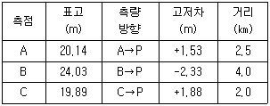
- 21.75m
- 21.72m
- 21.70m
- 21.68m
(정답률: 58%)
66. 삼각점을 선정할 때의 고려사항에 대한 설명으로 옳지 않은 것은?
- 삼각형의 내각은 60° 에 가깝게 하며, 불가피할 경우에도 90° 보다 크지 않아야 한다.
- 상호간의 시준이 잘 되어 연결 작업이 용이해야 한다.
- 불규칙한 광선, 아지랑이 등의 영향을 받지 않도록 한다.
- 지반이 견고하여야 하며 이동, 침하 및 동결 지반은 피한다
(정답률: 84%)
67. 다음과 같은 삼각망에서 각 조건방정식의 수는?
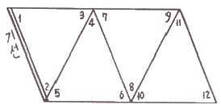
- 1개
- 3개
- 4개
- 6개
(정답률: 62%)
68. 그림과 같이 관측하는 수평각 측정 방법은?
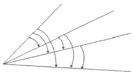
- 배각법
- 조합각 관측법
- 방향각법
- 단측법
(정답률: 63%)
69. 거리 1회 측정시 발생하는 오차를 ±0.01m라 하면 50회 연속 측정했을 때의 오차 계산식은?
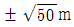
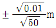
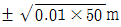
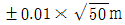
(정답률: 74%)
70. 등고선의 성질에 대한 설명으로 옳지 않은 것은?
- 경사가 급할수록 등고선 간격이 좁다.
- 경사가 같으면 등고선 간격이 같고 서로 평행하다.
- 등고선은 분수선과는 직교하고 계속선과는 평행하다.
- 등고선은 서로 만나는 경우도 있다.
(정답률: 50%)
71. 그림과 같은 교호수준측량 결과 a=2.995m, b=3.765m, c=2.111m, d=2.883m이였다. A점의 표고가 50.345m 이라면 B점의 표고는?
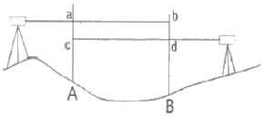
- 49.574m
- 50.346m
- 51.116m
- 51.228m
(정답률: 57%)
72. A점에서 트래버스 측량을 실시하여 A점에 되돌아 왔더니 위거의 오차 40cm, 경거의 오차는 25cm 이었다. 이 트래버스 측량의 전측선장의 합이 943.5m 이었다면 트래버스 측량의 폐합오차는?
- 1/1000
- 1/2000
- 1/3000
- 1/4000
(정답률: 66%)
73. 지형도의 활용과 가장 거리가 먼 것은?
- 저수지의 담수 면적과 저수량의 계산
- 절토 및 성토 범위의 결정
- 노선의 도상 선정
- 지적경계측량
(정답률: 58%)
74. 한 기선의 길이를 n회 반복 측정한 경우, 최확값의 평균제곱근오차에 대한 설명으로 옳은 것은?
- 관측횟수에 비례한다.
- 관측횟수의 제곱근에 비례한다.
- 관측횟수의 제곱근에 반비례한다.
- 관측횟수의 제곱에 반비례한다.
(정답률: 46%)
75. 지형도 도식전용규정의 목적과 가장 거리가 먼 것은?
- 지형, 지물 등의 표시방법에 관한 기준을 정함
- 각종 기호의 적용방법에 관한 기준을 정함
- 기호 및 주기의 선택에 관한 기준을 정함
- 기준점 위치의 측량 방법에 관한 기준을 정함
(정답률: 63%)
76. 기본측량의 실시 공고에 포함되어야 하는 사항으로 옳은 것은?
- 측량의 정확도
- 측량의 실시지역
- 측량성과의 보관 장소
- 설치한 측량기준점의 수
(정답률: 50%)
77. 성능검사를 받아야 하는 측량기기와 검사주기로 옳은 것은?
- 레벨 : 1년
- 토털 스테이션 : 2년
- 지피에서(GPS) 수신기 : 3년
- 금속관로 탐지기 : 4년
(정답률: 79%)
78. 수치주제도의 종류가 아닌 것은?
- 지형도
- 토양도
- 관광지도
- 지하시설물도
(정답률: 40%)
79. 우리나라 측량기준인 세계측지계에 대한 설명으로 틀린 것은?
- 지구를 편평한 회전타원체로 상정하여 실시하는 위치측정의 기준이다.
- 회전타원체의 중심이 지구의 질량중심과 일치한다.
- 회전타원체의 장축이 지구의 자전축과 일치한다.
- 회전타원체의 단축이 지구의 자전축과 일치한다.
(정답률: 58%)
80. 측량기준점 중 국가기준점에 해당되지 않는 것은?
- 위성기준점
- 통합기준점
- 삼각점
- 공공수준점
(정답률: 55%)